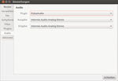

Roger Router
Dieser Artikel wurde für die folgenden Ubuntu-Versionen getestet:
Ubuntu 16.04 Xenial Xerus
Ubuntu 14.04 Trusty Tahr
Zum Verständnis dieses Artikels sind folgende Seiten hilfreich:
Das Programm Roger Router  ist eine grafische Oberfläche, mit der man Faxe über FRITZ!Box-Router von AVM versenden kann. Zusätzlich kann Roger Router den Anrufmonitor, Anrufbeantworter und Fax-Speicher des Routers abfragen und darstellen. Dabei werden eingehende und ausgehende Telefonnummern mittels Adressbuch oder Online-Dienst in Namen aufgelöst.
ist eine grafische Oberfläche, mit der man Faxe über FRITZ!Box-Router von AVM versenden kann. Zusätzlich kann Roger Router den Anrufmonitor, Anrufbeantworter und Fax-Speicher des Routers abfragen und darstellen. Dabei werden eingehende und ausgehende Telefonnummern mittels Adressbuch oder Online-Dienst in Namen aufgelöst.
Des Weiteren können Telefonnummern vom Rechner aus angewählt und die Internetverbindung neu aufgebaut werden. Die auf dem Router gespeicherten Nachrichten bzw. Faxe können direkt über die Oberfläche angehört bzw. angezeigt und auch auf dem Router gelöscht werden. Veröffentlicht wird das Programm mit der Lizenz GPL2.
Merkmale¶
Unterstützung von FRITZ!Box-Routern
Versand von Faxen via FRITZ!Box
Anrufsignalisierung für ein- und ausgehende Anrufe in Echtzeit
Softphone-Integration mit DTMF Support
Auslesen und Löschen der FRITZ!Box Anruflisten
Druck von Anruflisten
Automatische Speicherung und sukzessive Erweiterung der Anrufliste auf der Festplatte für optionale Bearbeitungen
Rückwärtssuche von Rufnummern über einschlägige Online-Branchenbücher (11880, Das Örtliche, gebeld.nl, gevonden.cc, nummerzoecker.com)
Wahlhilfe vom PC, z.B. via Doppelklicke im Anrufjournal oder Adressbuch gestützt durch manuelle Auswahl
Direkte Adressbuchunterstützung für Roger Router: Evolution, Google, Thunderbird, VCard und FRITZ!Box-Telefonbücher
Neuverbinden mit dem Internet (Router Fernsteuerung)
Wahldialog mit Funktion zum Auflegen
Optionale Steigerung der Bildqualität beim Fax Versand (Auflösung)
Setup-Assistent für eine benutzerfreundliche Programm-Einrichtung
Definition von Aktion (z.B. das Pausieren bzw. die Wiederaufnahme der Medienwiedergabe bei Beginn oder Ende eines Telefonats)
Unterstützung sicherer Kennwörter (GNOME Schlüsselbund, KWallet)
Verwaltung eigener Filteransichten im Journal
Allgemeine Hinweise¶
Es empfiehlt sich, vor der Installation die Einstellungen auf dem Router (Vorwahlen, Telefonnummern, etc.) zu prüfen und falls nötig zu korrigieren. Ebenso sollte, falls möglich und noch nicht eingerichtet, das Fax-Gerät auf dem Router eingerichtet werden.
Während der Installation von Roger Router wird automatisch der später benötigte Fax-Drucker "Roger-Router-Fax" angelegt. Sollte dieser einmal versehentlich gelöscht werden, genügt es, Roger Router einfach erneut zu installieren und somit den Fax-Drucker wieder zu erstellen. Es ist erforderlich, dass der Benutzer, der die Fax-Funktion nutzen will bzw. darf, Mitglied in der Gruppe fax ist. Nach Hinzufügen zur Gruppe muss der jeweilige Benutzer eine Neuanmeldung durchführen, erst danach steht die Fax-Funktion für den betreffenden Benutzer zur Verfügung.
Um ein Statussymbol zu erhalten, muss für Unity zusätzlich das Plugin "Application Indicator" (roger-plugins-indicator), für alle anderen Desktop-Umgebungen alternativ das Plugin "StatusIcon GTK" (roger-plugins-statusicon) installiert und anschließend in den "Einstellungen" unter "Plugins" aktiviert werden.
Bei Verwendung der Paketverwaltung Synaptic (oder auch anderer auf APT basierenden Paketverwaltungen) kann es vorkommen, dass nach der Einrichtung der OBS-Paketquelle und anschließendem aktualisieren der Paketquellen die OBS-Paketquelle trotzdem nicht angezeigt wird - hier sollte dann die Paketsuche benutzt werden - oder es werden auf einem 64-Bit-System nur 32-Bit-Pakete zur Installation angeboten. Sollten derartige Probleme auf dem eigenen System auftreten, kann das Software-Center weiterhelfen oder man führt die Installation im Terminal durch.
Router-Funktionen freischalten¶
Um Roger Router zu verwenden, müssen nachfolgende Funktionen im Router freigeschaltet werden:
Fax-Unterstützung (CAPI over TCP). Mit dem Telefon die Nummer
#96*3*wählen (zum Deaktivieren#96*2*wählen).Signalisierung von Anrufen. Mit dem Telefon die Nummer
#96*5*wählen (zum Deaktivieren#96*4*wählen).
Hinweis:
Bei manchen Telefonen wird # beim Wählen ausgelassen, mit der Folge, dass Telefoncodes nicht funktionieren! Um die Anwendung von Telefoncodes zu prüfen, bietet es sich für entsprechende Geräte an, das WLAN testweise per #96*1* ein- bzw. mit #96*0* auszuschalten. Falls das Telefon davon betroffen ist, kann es helfen, zunächst nur # zu wählen und zu warten, bis die Verbindung steht. Die restlichen Ziffern gibt man dann erst ein.
Installation¶
Roger Router ist bisher kein Bestandteil der offiziellen Paketquellen, kann aber über ein OBS-Repository installiert werden. Nachfolgend die Befehle [4] zum Einrichten und Authentifizieren der Paketquelle [1] am Beispiel von Ubuntu 16.04. (entsprechend der Ubuntu-Version muss gegebenenfalls 16.04 durch die verwendete Version ersetzt werden)
Um das OBS-Repository einzurichten, kann man entweder die URL deb http://download.opensuse.org/repositories/home:/tabos-team:/release/xUbuntu_16.04/ ./ in der Paketverwaltung hinzufügen [1] oder den folgenden Befehl ausführen [2][3]:
sudo sh -c "echo 'deb http://download.opensuse.org/repositories/home:/tabos-team:/release/xUbuntu_16.04/ /' > /etc/apt/sources.list.d/roger.list"
Hinweis!
Zusätzliche Fremdquellen können das System gefährden.
Anmerkung: Das OBS-Repository unterstützt nicht zwangsläufig alle Ubuntu-Versionen. Weitere Informationen zur Installation und den aktuell unterstützten Distributionen und Versionen finden sich auf der Projektseite oder im OBS-Repository  des Tabos-Teams .
des Tabos-Teams .
Um die Fremdquelle zu authentifizieren, kann man
entweder den Signierungsschlüssel herunterladen  und in der Paketverwaltung hinzufügen oder folgenden Befehl ausführen:
und in der Paketverwaltung hinzufügen oder folgenden Befehl ausführen:
wget -q http://download.opensuse.org/repositories/home:/tabos-team:/release/xUbuntu_16.04/Release.key -O- | sudo apt-key add -
Für andere Ubuntu-Versionen ist entsprechend die Versionsnummer "16.04" im Repository-Namen "xUbuntu_16.04" anzupassen. Zu beachten ist, dass "xUbuntu" nicht für "Xubuntu" steht, sondern allgemein für alle Ubuntu-Distributionen/Derivate sowie für Distributionen, die auf der entsprechenden Ubuntu-Version basieren (wie z.B.: Linux Mint).
Nach dem Aktualisieren der Paketquellen erfolgt die Installation [4] über das Paket:
roger (Hauptprogramm)
 mit apturl
mit apturl
Paketliste zum Kopieren:
sudo apt-get install roger
sudo aptitude install roger
Hinweis:
Ab Version 1.8.13 entfällt die Speicherung der Kennwörter im Klartext, somit muss zusätzlich ein Plugin für die sichere Speicherung der Kennwörter für die vom System benutzte Kennwortverwaltung zur Installation mit ausgewählt werden.
Unter KDE-Systemen ist hierzu das Paket roger-plugins-kwallet auszuwählen, unter nicht KDE-Systemen das Paket libroutermanager-plugins-secret. Letzteres benötigt zwingend das Paket gnome-keyring (oder, falls nicht vorhanden, die entsprechende Desktop-Alternative).
Erweiterungen¶
Um die Funktion von Roger Router zu erweitern, stehen aktuell die folgenden Plugins zur Verfügung. Diese können je nach Bedarf nachinstalliert werden. Die Paketnamen lauten:
roger-plugins-evolution (Evolution Adressbuch Unterstützung)
roger-plugins-fritzfon (FRITZ!Box Adressbuch Unterstützung)
roger-plugins-google (Google Adressbuch Unterstützung)
roger-plugins-thunderbird (Thunderbird Adressbuch Unterstützung)
roger-plugins-vcard (VCard Adressbuch Unterstützung)
roger-plugins-gnotification (GLIB-Benachrichtigung über eingehende/ausgehende/verpasste Anrufe mit Soundausgabe)
roger-plugins-gtknotify (GTK-Benachrichtigung über eingehende/ausgehende/verpasste Anrufe)
roger-plugins-notification (Benachrichtigung über eingehende/ausgehende/verpasste Anrufe mit Soundausgabe)
roger-plugins-statusicon (Statussymbol mit GTK nach Freedesktop-Standard)
roger-plugins-indicator (Statussymbol mit AppIndicator Unterstützung für Unity)
roger-plugins-kwallet (Passwortverwaltung - KDE Wallet Unterstützung)
libroutermanager-plugins-secret (Passwortverwaltung - SecretService Unterstützung)
libroutermanager-plugins-gstreamer1 (Audio Unterstützung für GStreamer1)
libroutermanager-plugins-pulseaudio (Audio Unterstützung für PulseAudio)
Nach der Installation eines weiteren Plugins sollte Roger Router neu gestartet und das betreffende Plugin in den "Einstellungen" unter "Plugins" aktiviert und konfiguriert werden.
Konfiguration¶
Nach der Installation kann Roger Router bei Ubuntu-Varianten mit einem Anwendungsmenü über den Eintrag "Internet -> Roger Router" gestartet werden [5].
Hinweis:
Wenn die Fehlermeldung "Could not access spooler directory. Is user in group fax? Fehler beim Öffnen des Ordners »/var/spool/roger«: Keine Berechtigung" erscheint, bitte kontrollieren, ob der gewünschte Benutzer mit:
sudo addgroup BENUTZERNAME fax ## BENUTZERNAME entsprechend anpassen newgrp - fax ## neue Gruppenzugehörigkeit aktivieren
der Gruppe fax hinzugefügt wurde. Nur dann startet Roger Router ohne Fehlermeldung.
Die Konfiguration erfolgt über die "Einstellungen", erreichbar über einen Rechtsklick  auf das Statussymbol im Panel, worauf sich ein Aufklappmenü mit diversen Auswahlmöglichkeiten öffnet. Wurde noch kein Plugin zum Anzeigen des Statussymbols ("Status Icon GTK" oder "Application Indicator") aktiviert, erreicht man die Einstellungen nur indirekt über das Journal-Menü. Das Journal-Menü ist entweder unter der Titelleiste im Journal selbst oder z.B. unter der GNOME Shell über das obere Panel (sofern das Journal das aktive Fenster ist) zu erreichen. Unter Unity ist das Menü, wie dort üblich, über die obere Panelleiste erreichbar.
auf das Statussymbol im Panel, worauf sich ein Aufklappmenü mit diversen Auswahlmöglichkeiten öffnet. Wurde noch kein Plugin zum Anzeigen des Statussymbols ("Status Icon GTK" oder "Application Indicator") aktiviert, erreicht man die Einstellungen nur indirekt über das Journal-Menü. Das Journal-Menü ist entweder unter der Titelleiste im Journal selbst oder z.B. unter der GNOME Shell über das obere Panel (sofern das Journal das aktive Fenster ist) zu erreichen. Unter Unity ist das Menü, wie dort üblich, über die obere Panelleiste erreichbar.
Experten-Info:
Die Einstellungen von Roger Router sind über den dconf-editor erreichbar:
org -> tabos -> router - enthält die unter den "Einstellungen" vorgenommen Einstellungen
org -> tabos -> routermanager - enthält die Profil-Einstellungen, die durch den Setup-Assistenten vorgenommen wurden
Setup-Assistent¶
Nach dem Erststart von Roger Router wird der "Setup-Assistent" ausgeführt, welcher den Benutzer Schritt für Schritt durch die Grundkonfiguration führt. Hierbei ist ein Name für das Profil zu vergeben sowie die nötigen Daten für den Router-Zugang einzutragen.
Sollte unter "Router auswählen" kein erkannter Router vorgegeben sein oder die Konfiguration mit dem vorgegebenen Router fehlschlagen (z.B. bei fehlerhafter Namensauflösung), kann alternativ "Andere" aktiviert werden und im darunterliegenden
Eingabefeld die IP-Adresse (bei der FRITZ!Box in der Regel 192.168.178.1) des Routers eingetragen werden.
Falls auf dem Router (ab FRITZ!OS möglich) ein Benutzer eingerichtet ist, muss unter Anmeldedaten der betreffende Benutzername für "User" sowie das zugehörige Passwort für "Password" eingegeben werden. Ist dies nicht der Fall, bleibt das Feld "User" einfach leer und es wird nur das Passwort eingetragen. Diese Eingaben entsprechen also in der Regel den Eingaben, die auch bei Anmeldung am Router über die Weboberfläche gemacht werden müssen. Gleiches gilt für die FTP-Anmeldedaten. Auch hier ist ein abweichend eingerichteter Benutzername mit dem zugehörigen Passwort einzutragen. Ist kein abweichender FTP-Benutzer eingerichtet, sollte der Standard-FTP-Benutzer ftpuser beibehalten und dessen Passwort eingegeben werden.
Kontroller-Auswahl¶
Die Wahl des Kontrollers ("Fax" bzw. "Softphone") hängt vom vorhandenen Telefonanschluss und dem Typ der Amtsverbindung ("Amt-Typ") auf dem Router ab und sollte nach Abschluss der Konfiguration auf alle Fälle getestet werden, um die Funktion zu gewährleisten.
| Übersicht der möglichen Einstellungen für "Kontroller" | |||
| Telefonanschluss | Amt-Typ (an Router mit S0) | Amt-Typ (an Router ohne S0) | Beschreibung |
| ISDN | ISDN-Kontroller 1 | Verwendung des ersten Kanals der ISDN-Leitung | |
| ISDN-Kontroller 2 | Verwendung des zweiten Kanals der ISDN-Leitung | ||
| ISDN-Amt | - | Verwendung des S0-Bus (z.B. wenn der Router hinter einer TK-Anlage hängt und nur per S0 mit dem Anschluss verbunden ist) | |
| Analoges Festnetz | Analog-Amt | Verwendung des analogen Telefonanschlusses | |
| nur DSL/Internet | Internet | Verwendung des eingerichteten VoIP direkt über das Internet | |
Einstellungen¶
Zur vollständigen Konfiguration wählt man "Einstellungen". Roger Router bietet Tooltipps bei fast jedem Eingabefeld oder jeder Schaltfläche. Fährt man mit der Maus über ein beliebiges Eingabefeld, werden nützliche und ausführliche Informationen angezeigt, die auch unerfahrenen Benutzern bei der weiteren Konfiguration helfen. Das Fenster für Einstellungen ist zum besseren Verständnis in logische Bereiche aufgeteilt, die als einzelne Seite bearbeitet werden können:
| Roger Router - Einstellungen | ||
| Seite | Beschreibung | Eingabemaske |
| "Router" | Hier gibt es in der Regel nichts zu tun, da der Setup-Assistent einem die Einstellungsarbeit abgenommen hat. Aber wenn man einmal den Anmeldebenutzer bzw. FTP-Benutzer oder deren Passwort auf seinem Router geändert haben sollte, kann man diese Änderung hier übernehmen. Mit der Schaltfläche "Aktualisieren" lassen sich die Einstellungen erneut vom Router laden. Dabei werden jedoch manuelle Änderungen auf die Router-Standardeinstellungen zurückgesetzt. | |
| "Vorwahlen" | Auch diese Einstellungen wurden bereits durch den Setup-Assistent vom Router übernommen (falls auf dem Router gespeichert). Wurden diese Einstellungen vom Router ausgelesen, ist eine Änderung hier nicht möglich und muss direkt auf dem Router vorgenommen werden. Anschließend werden über die oben erwähnte "Aktualisieren"-Schaltfläche die Router-Einstellungen neu eingelesen. | |
| "Fax" | Auch hier hat der Setup-Assistent alle Einstellungen bereits vorgenommen, vorausgesetzt auf dem Router wurde ein Fax-Gerät eingerichtet. Die Einstellungen für die "Auflösung" (die Voreinstellung ist hier "Niedrig (98dpi)") oder den voreingestellten "Kontroller" sollten geprüft und auf die gewünschten Einstellungen geändert werden. Dies gilt auch für das "Berichtsverzeichnis", im dem die Fax-Berichte gespeichert werden sollen. |  |
| "Softphone" | Die hier durch den Setup-Assistent vorgenommenen Einstellungen sollten auf jeden Fall geprüft und auf die gewünschten Einstellungen geändert werden. Hierbei unter "MSN" die zu benutzende Telefonnummer und unter "Kontroller" den zutreffenden Anschluss für ausgehende Gespräche auswählen. Zusätzlich müssen auf der Seite "Audio" die passenden Einstellungen zur Nutzung der Telefon-Funktion angegeben werden. | |
| "Filter" | Hier können die vorhandenen Filter für die Journal-Anzeige bearbeitet, entfernt oder neue Filter hinzugefügt werden. | |
| "Plugins" | Hier können die installierten Plugins aktiviert oder deaktiviert werden. Einige Plugins erlauben zusätzliche Einstellungen, die über die Schaltfläche "Einstellungen" erreichbar sind. Die zum jeweiligen Plugin angezeigten Hinweise sollten den Anwendungszweck verdeutlichen. Benutzer von Unity sollten, sofern ein Statussymbol erwünscht, das Plugin "Application Indicator" installieren und aktivieren. | |
| "Audio" | Hier werden die Einstellungen für die Audio-Benachrichtigungen sowie für das Softphone vorgenommen. Unter "Plugin" ist aktuell (Roger Router 1.8.3) nur PulseAudio verfügbar. Unter "Ausgabe" und "Eingabe" werden die gewünschten Anschlüsse ausgewählt. |  |
| "Aktionen" | Hier können für ein- und/oder ausgehende Anrufe Aktionen bearbeitet, entfernt und hinzugefügt werden. | |
Benutzung¶
Ein Linksklick  auf das Statussymbol öffnet bzw. schließt das Journal (nur bei aktiviertem "StatusIcon (GTK)"-Plugin).
auf das Statussymbol öffnet bzw. schließt das Journal (nur bei aktiviertem "StatusIcon (GTK)"-Plugin).
Ein Rechtsklick auf das Statussymbol, bei aktiviertem "Application Indicator"-Plugin (s. Abbildung) auch mit Linksklick -Klick, öffnet das Kontextmenü. Die wichtigsten Ziele sind mit einem einzigen Klick erreichbar:
Journal¶
Das Journal informiert über alle auf dem Router gespeicherten Anrufe. Anrufe in Abwesenheit erkennt man daran, dass sich das Programmsymbol in ein orangefarbenes Kreuz verwandelt. Im Journal stehen folgende Funktionen zur Verfügung:
"Journal laden" - lädt die Anruferliste vom Router neu
"Journal drucken" - gibt die Anruferliste auf dem gewünschten Drucker aus
"Lösche Journal vom Router" - löscht alle Anruferdaten unwiderruflich vom Router
"Ausgewählten Eintrag löschen" - löscht alle markierten Einträge (Anruferdaten, Faxdatei oder Nachricht) unwiderruflich vom Router
"Ausgewählten Eintrag zum Adressbuch hinzufügen" - fügt die Anruferdaten zum benutzten Adressbuch hinzu
"Suche" - durchsucht die Anruferliste nach dem eingegebenen Suchbegriff (Telefonnummer oder Name)
"Filter" - stellt die Anzeige für die Anruferliste ein (über "Einstellungen -> Filter" können Filter hinzugefügt, entfernt oder bearbeitet werden)
Kontakte¶
Hier können die Kontakte des aktivierten Adressbuches bearbeitet werden. Es stehen die folgenden Funktionen zur Verfügung:
nach einem Kontakt suchen
einen Kontakt hinzufügen
den ausgewählten Kontakt bearbeiten
den ausgewählten Kontakt löschen
das Adressbuch neu einlesen
Sobald ein Kontakt in der Kontaktliste ausgewählt (markiert) wurde, werden rechts daneben die vorhandenen Kontaktdaten angezeigt. Es kann jetzt über die "Hörer abheben"-Schaltfläche, die der angezeigten Telefonnummer zugewiesen ist, der "Telefon"-Dialog aufgerufen und eine Verbindung hergestellt werden.
Hinweis:
Ist die Kontaktliste leer und sind alle Schaltflächen deaktiviert, ist wahrscheinlich kein Telefonbuch-Plugin installiert. Ein nachträgliches Installieren löst das Problem.
Telefon¶
Die Wählfunktion bietet eine automatische Vervollständigungsfunktion. Will man also eine Person aus dem Adressbuch anrufen, muss man nur wenige Buchstaben des Namens im Feld "Verbinden mit" eintippen und es wird in Echtzeit eine Liste mit Übereinstimmungen generiert. Sieht man den gewünschten Gesprächspartner in der Liste, reicht ein Linksklick darauf und Roger Router übernimmt diesen Eintrag in das Eingabefeld.
Man kann außerdem noch angeben, an welches Endgerät das Gespräch vermittelt werden soll. Dazu wählt man aus dem Aufklappmenü "Nebenstelle" einfach das entsprechende Gerät aus. Die Bezeichnung des Endgerätes wird aus der Konfiguration des Routers übernommen. Es stehen nur die auf dem Router eingerichteten Telefone und das Softphone zur Verfügung. Unter "Eigene Nummer" kann die Vorgabe "Standard" (die konfigurierte Rufnummer wird übermittelt) oder "Unterdrücke Rufnummer" gewählt werden. Über die Symbol-Schaltfächen "Hörer abheben" wird die Verbindung herstellt und über "Hörer auflegen" die Verbindung getrennt.
Wird beim Telefon der Button "Aufnahme" benutzt, hinterlegt die Software den Mitschnitt des Gespräches unter ~/.local/share/roger/ mit dem Dateinamen TAG-ZEIT-ABGEHENDE_NUMMER- ANGERUFENE_NUMMER . Einem Mitschnitt muss immer angekündigt und vom Gesprächspartner auch akzeptiert werden, die Zustimmung dazu sollte mit aufgenommen werden.
Letzte Anrufe¶
Hier werden die letzten Anrufe (jeweils max. 5) für "Eingehend", "Ausgehend" und "Verpasst" angezeigt. Angezeigt wird entweder der Anrufername (sofern über ein Adressbuch auflösbar) oder die Rufnummer. Anrufe ohne Rufnummer werden nicht angezeigt. Durch Anklicken eines Eintrags wird der Telefon-Dialog geöffnet und es kann eine Verbindung hergestellt werden.
Funktionen¶
Über "Funktionen -> IP-Adresse kopieren" wird die aktuell vom Provider zugewiesene IP-Adresse in die Zwischenablage kopiert, mit "Funktionen -> Neu verbinden" wird die Internetverbindung des Routers kurzzeitig getrennt und somit eine neue IP-Adresse vom Provider bezogen.
Aktionen benutzen¶
Aktionen sind externe Programme oder Skripte, die Roger Router bei Ereignissen ausführen soll. Ein Ereignis steht hierbei für einen Anruf und wird wie folgt definiert: Man wählt zwischen eingehenden und ausgehenden Anrufen und spezifiziert den genauen Zeitpunkt der Ausführung (zu Beginn oder nach dem Anruf).
Möchte man den Namen und die Nummer zum Anruf im Skript nutzen, gelten folgende Platzhalter:
%LINE%- lokale Telefonnummer zum Anruf%NUMBER%- Telefonnummer zum Anruf%NAME%- vollständiger Name zum Anruf%COMPANY%- Firmenname zum Anruf
| Hier einige Beispiele möglicher Aktionen für externe Programme | ||
| Programm | Funktion | Kommando (Execute) |
| Rhythmbox | Musikwiedergabe unterbrechen | /usr/bin/rhythmbox-client --pause --no-start |
| Musikwiedergabe fortsetzen | /usr/bin/rhythmbox-client --play --no-start | |
| Audacious | Musikwiedergabe unterbrechen | sh -c '/usr/bin/audtool playback-paused || /usr/bin/audtool playback-pause' |
| Musikwiedergabe fortsetzen | sh -c '/usr/bin/audtool playback-paused && /usr/bin/audtool playback-play' | |
| Lautstärkeregelung | Ausgabelautstärke um 25% vermindern (ALSA) | amixer -c 0 set PCM 25%- |
| Ausgabelautstärke um 25% erhöhen (ALSA) | amixer -c 0 set PCM 25%+ | |
| Stumm schalten (PulseAudio) | pacmd "set-sink-mute 0 1" | |
| Laut schalten (PulseAudio) | pacmd "set-sink-mute 0 0" | |
| Pidgin | Abwesenheitsnachricht setzen | /usr/bin/purple-remote "setstatus?status=away&message=Telefoniert gerade mit %NAME%" |
| stelle Status wieder auf online | /usr/bin/purple-remote "setstatus?status=available&message=bin wieder da!" | |
| eSpeak | Soundausgabe des Anrufers ausgeben | padsp espeak -v de "Eingehender Anruf von %NAME%" |
| Tomboy | eine Anrufernotiz anlegen | /usr/bin/tomboy --new-note %NAME% (%NUMBER%) |
| Tomboy Notiz Ersteller | öffnet ein Dialogfenster zur Erstellung einer Anrufernotiz | tomboy_note.py "%NAME%" "%NUMBER%" |

Ein Fax versenden¶
In der Regel kann aus jeder Anwendung, die über eine Druckfunktion verfügt, auch ein Fax versendet werden. Hierzu einfach die Druckfunktion aus der betreffenden Anwendung, meist über "Datei -> Drucken", aufrufen. In dem daraufhin sich öffnenden Dialog "Drucker" den Drucker "Roger-Router-Fax" auswählen und den Druck über die Schaltfläche "Drucken" starten. Nachdem die eigentliche Faxdatei erstellt wurde, öffnet sich der Fax-Dialog (die Funktionsweise entspricht im wesentlichen denen des Telefon-Dialogs), in dem die Rufnummer des Empfängers eingetragen wird. Durch Linksklick auf die Symbol-Schaltfläche ""Hörer abheben"" kann der Faxvorgang gestartet werden. Sobald der Faxvorgang abgeschlossen wurde, kann der Fax-Dialog einfach geschlossen werden. Über die Symbol-Schaltfläche "Hörer auflegen" kann der Wahl-/Übertragungsvorgang jederzeit abgebrochen werden.
Links¶
Diskussion zu Roger Router (roger) - Hilfe, Wünsche etc.
FritzBox
 - Weitere Artikel zum Thema FRITZ!Box
- Weitere Artikel zum Thema FRITZ!Box
- Erstellt mit Inyoka
-
 2004 – 2017 ubuntuusers.de • Einige Rechte vorbehalten
2004 – 2017 ubuntuusers.de • Einige Rechte vorbehalten
Lizenz • Kontakt • Datenschutz • Impressum • Serverstatus -
Serverhousing gespendet von